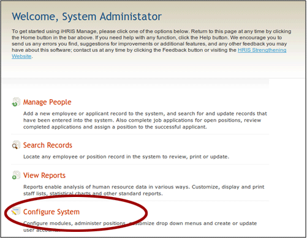
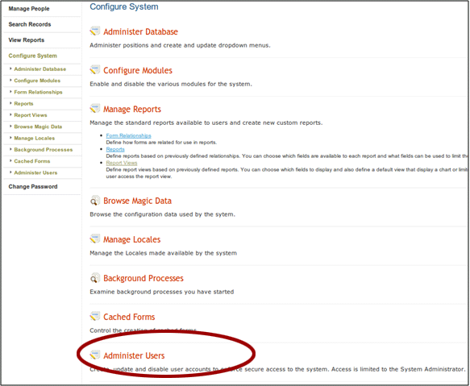
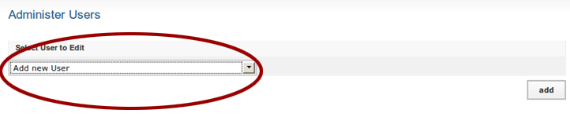
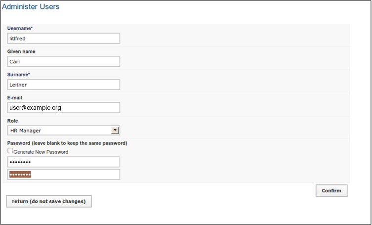
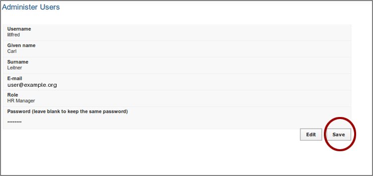

User Roles and Adding New Users
iHRIS Administrator - Level I, © IntraHealth International, CC BY 4.0. Originally offered at hrhresourcecenter.org/elearning (CapacityPlus). Licence stated by its author, the folio owner, 2026-10-09.
1. iHRIS Users and Roles
This module covers:
- iHRIS users' roles and tasks
- how to add a new user to the system.
2. iHRIS Users and Roles
Each user of the iHRIS system is assigned a role.
Roles for iHRIS Manage:
- Administrator
- Executive Manager
- HR Manager
- HR Staff
- Training Manager
Roles for iHRIS Qualify:
- Administrator
- Data Operations Manager
- Decision-Maker
- Records Office
- Registration Supervisor
3. Roles and Tasks
Each role is defined by a collection of tasks that they can perform in the system.
These tasks can be modified.
Example tasks for an HR Manager:
- create and edit Report Views
- edit all database Lists
- edit all of a person's details
- change own password
Example tasks for HR Staff:
- view any Report Views
- edit the Facility List
- edit some of a person's details
- change own password
4. List of All Tasks by Role
A list of default tasks assigned to roles is at: http://open.intrahealth.org/mediawiki/IHRIS_Role_List
5. Adding a New User
You must be able to login as system administrator to add users:
- username: i2ce_admin
- password: the mysql password you set on install
From the welcome page, click "Configure System".

6. Administer Users
Click "Administer Users".

7. Add New User
Select "Add New User" from the dropdown list.
Click "Add".

8. Enter User Details
Enter user details and select role.
Click "Confirm" to validate the details.

9. Create User
Create the user by clicking "Save".

Source
Lesson in Section 2 of iHRIS Administrator - Level I, Moodle course module cm-49; library/ihris-admin-course/modules/cm-49.md.